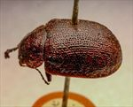
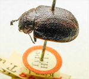
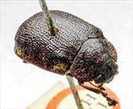
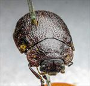
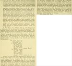

Click on images to enlarge
{kind=link}

Fig. 1. Paropsis acclivis holotype specimen, lateral view
{kind=link}

Fig. 2. Paropsis acclivis holotype specimen, lateral view
{kind=link}

Fig. 3. Paropsis acclivis holotype specimen, dorsal view
{kind=link}

Fig. 4. Paropsis acclivis holotype specimen, anterior view
{kind=link}

Fig. 5. Paropsis acclivis, description
Name
Paropsis acclivis (Blackburn, 1907)
Corresponds to
This is species Ta210.
Diagnosis and Notes
Blackburn (1907) deals with P. acclivis as part of his subgroup ii (i.e., those species without "strongly marked characters", whose greatest height is not or scarcely in front of the middle of the elytral margin and whose elytra are depressed under the humeral callus). Within that group, he characterises it as:
(1) inner edge of humeral callus distinctly nearer to lateral margin of elytra than to suture;
(2) sides of prothorax more or less explanate;
(3) elytra not having well-defined continuous costae;
(4) puncturation of the elytra not particularly fine;
(5) upper surface of elytra in general, or at least the verrucae, black or nearly so;
(6) explanate margins of prothorax wide (each about 1/3 of width of discal part);
(7) postbasal impression of elytral disc feeble;
(8) prothorax at its widest notably behind the middle;
(9) elytral puncturation well-defined, and seriate to apex;
(10) legs testaceous;
(11) Form much less wide [than regularis], elytra less rounded at sides.
Type specimen
Location: BMNH
Label data: /“Type H.T.” (red-bordered circle)/ “King I. Tas. Lea”/ “7599 King Isl. T”/ “Blackburn coll. 1910-236.”/ “Paropsis acclivis Blackb.”/.
Male; Size: 11.2 (L) x 7.5 (W) x 4.45 (H) mm; A-A: 1.66 mm; HCE/BL ~ 14.5% (estimated from a photo of lateral view).
Head brown; pronotum brown, punctures clearly impressed, clearly explanate; elytra quite smooth, brown, punctures distinct, interstices darker and thickened in places, almost becoming verruca-like; trochanters with at least 3-4 setae each.
Original description
Translation of original description (Figure 4) by ChatGPT, 04/2026:
♂. Rather broadly sub-ovate, less convex, with the greatest height (seen from the side) situated well behind the middle of the elytral margin; moderately shining; ferruginous, the elytra ornamented with black verrucae; underside black, variegated with red; antennae dark except at the base. Head uneven, rather coarsely and somewhat rugosely punctulate, the extreme base somewhat blackish. Prothorax broader than long in the ratio of about 2⅘:1, widened from the apex to well beyond the middle; closely and rather strongly punctulate (at the sides coarsely rugulose); sides strongly rounded, broadly and slightly flattened; posterior angles absent. Scutellum almost smooth. Elytra depressed beneath the humeral callus, and behind the base lightly transversely impressed; closely, strongly, and fairly distinctly in rows punctured (a little more coarsely at the sides, a little less so posteriorly); furnished with verrucae (these continuous from base to apex), some elongate, some rounded; intervals fairly rugulose; marginal area indistinctly separated from the disc by a not very distinct groove; inner margin of the humeral callus much more distant from the suture than from the lateral margin of the elytra. Basal ventral segment (this reddish) sparsely and finely punctulate; third antennal segment slightly longer than the fourth. Length 5½ lines (~11.7 mm); width 3½ lines (~7.4 mm).
Notes
Blackburn (1896) deals with P. acclivis as part of his subgroup ii (i.e., those species without "strongly marked characters", whose greatest height is not or scarcely in front of the middle of the elytral margin and whose elytra are depressed under the humeral callus), adding an extra couplet to his key to accomodate this species next to P. comma. He characterises it as:
A. Inner edge of humeral callus distinctly nearer to lateral margin of elytra than to suture;
B. Sides of prothorax more or less explanate;
C. Elytra not having well-defined continuous costae;
D. Puncturation of the elytra not particularly fine;
E. Upper surface of elytra in general, or at least the verrucae, black or nearly so;
F. Explanate margins of prothorax wide (each about 1/3 of width of discal part);
G. Postbasal impression of elytral disc feeble;
H. Prothorax at its widest notably behind the middle;
II. Elytral puncturation well-defined, and seriate to apex;
J. Legs testaceous;
K. Form much less wide [than regularis], elytra less rounded at sides;
LL. Greatest height of the insect (viewed from side) considerably behind middle of elytral margin.
References
Blackburn, T. 1907, "Further notes on Australian Coleoptera, with descriptions of new genera and species. Part XXXVII", Transactions of the Royal Society of South Australia, vol. 31, 231-299 (page 296).
Copyright © 2026. All rights reserved.